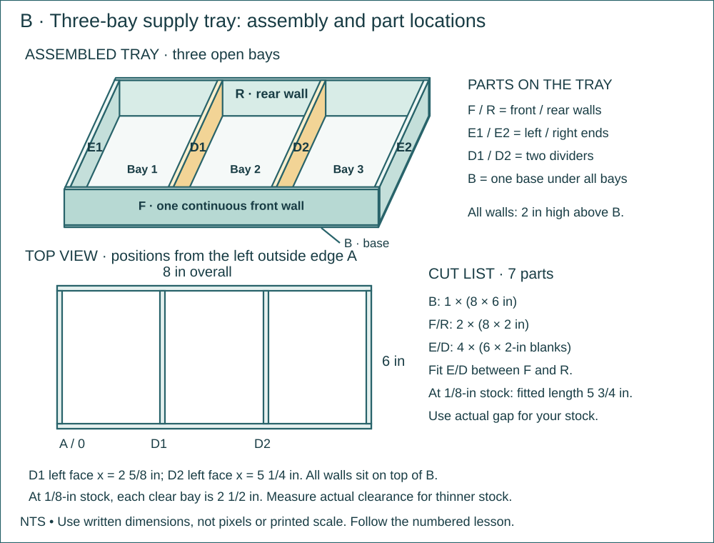

ETF Project 1 · product design, prototyping and revision
P1 · 03 · Measure and Cut the Durable Tray Parts
Make the seven fitted parts for a stronger copy of the same three-bay tray; dry-fit them before assembly.
Name: __________________ Date: __________ · 110 minutes
Why this job?
Fabricators use a cut list to avoid wasting stock. You will transfer dimensions and account for the actual wall thickness.
Daily kit · one crew
Each student: tape measure, pencil and graph notebook. Per crew: ruler, scissors and masking tape. Previous prototype, clean thin packaging card totaling at least 130 in² of usable area per crew, and 12 in of temporary tape. B = base 8 × 6 in; F and R = two long walls 8 × 2 in; E1, E2, D1 and D2 = four short-wall blanks 6 × 2 in. Trim short walls to the measured gap between F and R.
Finished means
- Seven labeled durable parts that dry-fit the tray plan.
- Notebook: stock layout, complete final cut list and two inspection readings per student.

Brief · 10 minutes · Today’s exact job
- Why this job: Fabricators use a cut list to avoid wasting stock. You will transfer dimensions and account for the actual wall thickness.
- Required today: Make the seven fitted parts for a stronger copy of the same three-bay tray; dry-fit them before assembly.
- Look at the supplied labeled drawing. Find the finished object or test setup before starting.
- Read the kit list. Take the listed continuing project out of storage; name missing items before beginning.
Notebook: Title/date; one sentence naming today’s exact object and its purpose.
Measure · 15 minutes · Measure and mark
- Measure usable stock. Lay out 8 × 6 base, two 8 × 2 walls and four 6 × 2 blanks; each student marks at least one part.
- Mark D1/D2 positions at 2 5/8 and 5 1/4 in from the base’s left edge. Check both endpoints before drawing each line.
Notebook: Feature | required value | actual value | units | datum/endpoints. Keep repeat readings.
Plan · 15 minutes · Read the plan and work the math
- Make a cut-list table: part | quantity | blank length | height/depth | final fitted length. Enter B×1, F/R×2, E/D×4.
- Draw the rectangles on available stock with no overlaps. Shared scissors cuts need no added saw kerf. Preserve long straight offcuts.
Notebook: Use the named sketch/table in the directions. Label views, dimensions, units and revision.
Worked example · practice values
These supplied values teach the method. Build from today’s required plan dimensions; record your own actual test data.
- Four rectangular parts are each 4 × 3 in. A sheet measures 9 × 12 in. Calculate the area used and describe a layout that proves all four parts fit.
- Each 4 × 3-in piece has 12 in² area; four use 48 in². Two rows of two fit in an 8 × 6-in rectangle.
- A 9 × 12-in sheet can contain this arrangement. Area alone would not prove a different set of shapes fits.
Build along · one move at a time
Maker acts. Checker compares with the plan. Swap at the pause. Use the complete numbered directions below.

Cut and label B, F and R. Temporarily stand the long walls on the base, flush with its edges.

Hold a scrap strip against F. Mark where it reaches the inside of R. Transfer that measured gap to a short-wall blank.
Partner checks the mark. Trim one short wall and dry-fit it without bending either long wall.

Fit the other three short walls to the checked length. Dry-fit all seven parts; leave partitions untaped today.
Make · 45 minutes · Numbered bench directions
- Cut B, F and R first. Label each part on the face that will be outside.
- Temporarily tape F/R upright on B with outer faces flush to the base edges.
- Use a narrow scrap strip to capture the inside gap: hold one end against F, mark where it meets the inside face of R, then measure that length.
- Transfer that gap to all four short-wall blanks. Mark a waste X on the portion to remove.
- Partner checks the first marked short wall; trim it and test it between F/R without bending either wall.
- Trim the remaining three to the same checked length. Label E1/E2/D1/D2.
- Dry-fit all seven pieces in their specified positions. Do not permanently tape partitions today. Bundle small parts in the base with the cut list.
Notebook: Label made parts and note any changed dimension. A short labeled sketch is enough; do not write an essay.
Test · 15 minutes · Test and inspect
- Each short wall fits between F/R without force and with no end gap greater than 1/8 in.
- Check one 8-in part and one fitted part independently. Record intended, actual and signed difference; ±1/8 in is the classroom cutting tolerance.
Notebook: Copy the specified trial table; include each pass/fail or measured value and the change made.
Explain · 10 minutes · Show the finished work
- Put these on the bench: Seven labeled durable parts that dry-fit the tray plan.
- Notebook: stock layout, complete final cut list and two inspection readings per student.
- Complete the independent transfer problem below. These supplied numbers are practice values; they do not change the required build dimensions.
- A 12 × 9-in sheet supplies six 4 × 3-in pieces. Show an arrangement, calculate used area and remaining area, and explain why the layout matters.
- Save one short individual answer with units, working and notebook page/date. Show the teacher your own physical measurement and plan interpretation. Store the labeled project and return shared supplies.
Notebook: Individual transfer calculation with units + page/date containing the practical evidence.